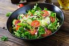

- Valeriana Salad
- Tomatoes
- Extra-virgin olive oil
- Vinegar
- Salt
- Pour the Valeriana in a relatively big bowl
- Chop the tomato into small and thin pieces
- Pour 1 tablespoon of vinegar
- Add extra-virgin olive oil and salt to your liking
- Start mixing until it tastes good